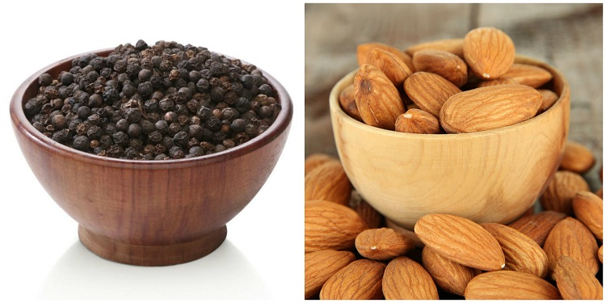

- होम
-
वेन्डर

आयुर्वेद तन, मन और आत्मा के बीच संतुलन बनाकर स्वास्थ्य में सुधार करता है। आयुर्वेद में न केवल उपचार होता है बल्कि यह जीवन जीने का ऐसा तरीका सिखाता है, जिससे जीवन लंबा और खुशहाल होता है। आयुर्वेद के अनुसार शरीर में वात, पित्त और कफ जैसे तीनों मूल तत्वों के संतुलन से कोई भी बीमारी आप तक नहीं आ सकती। लेकिन जब इनका संतुलन बिगड़ता है, तो बीमारी शरीर पर हावी होने लगती है और आयुर्वेद में इन्हीं तीनों तत्वों का संतुलन बनाया जाता है। साथ ही आयुर्वेद में रोग प्रतिरोधक क्षमता विकसित करने पर बल दिया जाता है ताकि किसी भी प्रकार का रोग न हो।
 आयुर्वेद में विभिन्न रोगों के इलाज के लिए हर्बल उपचार, घरेलू उपचार, आयुर्वेदिक दवाओं, आहार संशोधन, मालिश और ध्यान का उपयोग किया जाता है। आयुर्वेद क्या है, आयुर्वेद से विभिन्न रोगों को इलाज कैसे होता है, आयुर्वेद का इस्तेमाल कैसे किया जाता है, त्वचा के लिए आयुर्वेद कैसे काम करता है और आयुर्वेदिक औषधियां कौन-कौन सी हैं, इसके अलावा आयुर्वेद के बारे में संपूर्ण जानकारी के लिए इस केटेगरी को पढ़ें।
आयुर्वेद में विभिन्न रोगों के इलाज के लिए हर्बल उपचार, घरेलू उपचार, आयुर्वेदिक दवाओं, आहार संशोधन, मालिश और ध्यान का उपयोग किया जाता है। आयुर्वेद क्या है, आयुर्वेद से विभिन्न रोगों को इलाज कैसे होता है, आयुर्वेद का इस्तेमाल कैसे किया जाता है, त्वचा के लिए आयुर्वेद कैसे काम करता है और आयुर्वेदिक औषधियां कौन-कौन सी हैं, इसके अलावा आयुर्वेद के बारे में संपूर्ण जानकारी के लिए इस केटेगरी को पढ़ें।
पतंजलि आयुर्वेद ने सबसे पहले औषधियों के निर्माण से शुरुआत की थी। धीरे-धीरे पतंजलि आयुर्वेद खाने-पीने की चीजों से लेकर कांतिवर्धक उत्पादों का निर्माण भी करने लगी है। पतंजलि आयुर्वेद 45 तरह के कांतिवर्धक (cosmetics) उत्पाद बनाती है जिसमें सिर्फ 13 तरह के शरीर साफ़ करने के उत्पाद शामिल हैं, जैसे-शैंपू, साबुन, लिप बाम, स्किन क्रीम आदि। किराना के भी बहुत से उत्पादों का निर्माण पतंजलि आयुर्वेद द्वारा किया जाता है। यह कंपनी 30 अलग-अलग तरह के खाद्य पदार्थ तैयार करती है जैसे- सरसों तेल, आटा, घी, बिस्किट, मसाले, तेल, चीनी, जूस, शहद इत्यादि। दूसरी कंपनियों की तुलना में पतंजलि आयुर्वेद के उत्पाद सस्ते हैं।

एफ.एम.सी.जी. कंपनियों को कड़ी चुनौती देने के लिए पतंजलि आयुर्वेद हाल ही में टीवी पर अपने उत्पादों के विज्ञापन देने शुरू किए हैं। साल 2012 में करीब 150 से 200 के बीच रहने वाली पतंजलि के दुकानों की संख्या बढ़कर 6000 हो चुकी है। इतना ही नहीं पतंजलि आयुर्वेद के तमाम उत्पाद पतंजलि आयुर्वेद की आधिकारिक वेबसाइट पर ऑनलाइन भी बेचे जा रहे हैं।पतंजलि आयुर्वेद का च्यवनप्राश और सरसों का तेल आदि अब रिलायंस के रिटेल स्टोर में भी बिकने लगे हैं। देश भर के 400 स्टोर्स में पतंजलि आयुर्वेद के उत्पाद बिक रहे हैं जिसे 2015 के आखिर तक 1000000 स्टोर्स तक पहुंचाने की योजना है।
आयुर्वेद/Ayurveda एक दवाई या Medicine का System है जिसकी शुरुवातकई वर्षों पहले भारत में हुई थी। Ayurveda Medicines का पूरा रहस्य भारत के इतिहास से जुडा हुआ है। आज के दिन में विश्व भर के ज्यादातर आधुनिक और वैकल्पिक चिकित्सा, आयुर्वेद से लिया गया है। प्राचीन आयुर्वेद चिकित्सा की शुरुवात देवी-देवताओं के ग्रंथों से हुआ था और बाद में यह मानव चिकित्सा तक पहुंचा। सुश्रुत संहिता (Sushruta Samhita) में यह साफ़-साफ लिखा गया है कि धनवंतरी, ने किस प्रकार से वाराणसी के एक पौराणिक राजा के रूप में अवतार लिया और उसके बाद कुछ बुद्धिमान चिकित्सकों और खुद आचार्य सुश्रुत को भी दवाइयों के विषय में ज्ञान दिया।
आयुर्वेद के उपचार में ज्यादातर हर्बल चीजों का उपयोग होता है। ग्रंथों के अनुसार कुछ खनिज और धातु पदार्थ का भी उपयोग औषधि बनाने में किया जाता था। यहाँ तक की प्राचीन आयुर्वेद ग्रांटों से सर्जरी के कुछ तरीके भी सीखे गए हैं जैसे नासिकासंधान (Rhinoplasty), पेरिनिअल लिथोटोमी (Perineal Lithotomy), घावों की सिलाई (Wounds Suturing), आदि। वैसे तो आयुर्वेद के चिकित्सा को वैज्ञानिक तौर पे माना गया है पर इसे वैज्ञानिक तौर पर पालन ना किया जाने वाला चिकित्सा प्रणाली कहा जाता है। पर ऐसे भी बहित सारे शोधकर्ता हैं जो आयुर्वेदिक चिकित्सा को विज्ञानं से जुड़ा (Proto-Science) मानते हैं।
आयुर्वेद का शुरुवात अथर्व वेद से हुआ जो चार वेदों में से एक है जिसमें तरह-तरह के प्राचीन दवाइयों के विषय में जानकारी दी गयी है। यह बात अष्टांग अह्रिदयम Ashtanga Hridayam के प्रथम अध्याय में अयुर्वेदावातारना Ayurveda Vata Rna वग्भाता ने लिखा था जिसका मतलब है आयुर्वेद की उत्त्पति के विषय में बताया गया है। उसमें यह भी बताया गया है कि ब्रह्मा ने ही आयुर्वेद का ज्ञान प्रजापति को दिया।
आयुर्वेद का सही रूप में विकास संहिता दौर में शुरू हुआ जब चरक संहिता लिखा गया। यह आत्रेय और पुनर्वसु ने अपनी कक्षा में बात करते समय का प्रतिलिपि है। यह कहा जाता है चरक संहिता को 6 वे सदी ईसापूर्व में लिखा गया था जिसमे माना जाता है 300-600 ईसापूर्व के मध्य इसमें सर्जरी के विषय में भी लिखा गया था।
- रोग एवं उपचार
- ज्ञानधार
- संपर्क

सुपर फूड
-
अदरक में बहुत से पोषक तत्व और एंटीऑक्सिडेंट होते है जो कैंसर, श्र्वशन, मोटापा, गठिया, मासिक धर्म संबंधित रोगों दूर करने में लाभकारी होते है। इसके अलावा यह गैस और एसिडिटी (Acidity) को दूर करने में भी मदद करता है अदरक ताजे या सूखे हर प्रकार से उपयोगी होते है। अदरक से हम अपने भोजन को स्वादिष्ट बना सकते है। अदरक के बहुत से स्वास्थ्य लाभ होते है। आइए इन्हें जानें।
-
आंवला बेशक छोटा-सा फल है, लेकिन गुणों के मामले में इसकी कोई तुलना नहीं है। लगभग हर घर में प्रयोग होने वाला यह फल कई मामलों में गुणकारी है। फिर चाहे आप इसे अचार के तौर पर खाएं या इसका जूस पिएं या फिर औषधी के तौर पर प्रयोग करें, हर लिहाज से यह फायदेमंद है। हालांकि कुछ लोग आंवला खाने के फायदे नहीं जानते, लेकिन इस कमी को हम आज पूरा कर देते हैं। आज इस लेख में हम आंवला के फायदे तो आपको बता ही रहे हैं, साथ ही आंवला के नुकसान के बारे में भी बताएंगे।
-

4 बादाम को रात भर भिगोकर रखें और सुबह इसे 4 काली मिर्च के साथ पिसकर मिश्री के साथ खाएं। इसके उपर से दूध पीएं। मोतियाबिंद की परेशानी सही होगी।
-
कच्ची व हरी सब्जियों में पोषक तत्व और विटामिन ए (Vitamin A) की उच्च मात्रा होती है जो कि आंखों के स्वास्थ्य रखने के जरूरी है। अपने दैनिक आहार में कच्ची सब्जियों को शामिल करें। इससे मोतियाबिंद के साथ ही आंखों की अन्य सामान्य समस्याओं से भी निपटा जा सकता है।
-

जामुन में एंथोसायनोसाइड्स (Anthocyanosides) तथा फ्लेवनाइड्स (Flavonoids) काफी अधिक होते हैं जो कि रेटिना (Retina) और आंखों के लैंस (Eye Lens) की रक्षा करते हैं हालांकि जामुन से मोतियाबिंद पूरी तरह नहीं हटता लेकिन दृष्टि की अस्पष्टता को ठीक किया जा सकता है।
-
लहसुन की दो से तीन कलियां रोजाना खाने से कुछ ही दिनों में धब्बे की शिकायत दूर हो जाएगी।
-
ग्रीन टी से आंखों की रोशनी तेज हो सकती है। रोजाना तीन से चार बार ग्रीन टी पीने आंखों को स्वास्थ्य लाभ होता है। ग्रीन टी में मौजूद एंटीऑक्सीडेंट (Antioxident) आंखों को नई ताजगी देते हैं।
-
310 मि.ली. गाजर के रस में 125 मि.ली. पालक का रस मिलाकर पीएं। इससे भी मोतियाबिंद दूर हो जाता है।
यह तो सभी जानते हैं कि हल्दी को एंटी सेप्टिक कहा जाता है। यह हमें विभिन्न संक्रमणों से लड़ने की ताकत प्रदान करती है। चाहे अंदरूनी घाव हो या शरीर के बाहर के घाव, यह उन्हें भरने का काम करती है। इसलिए भारतीय परिवारों में हल्दी को अधिक से अधिक इस्तेमाल किया जाता है।